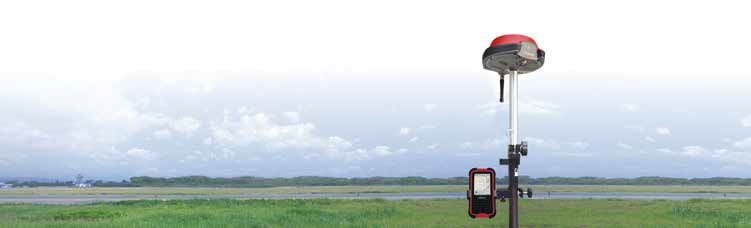
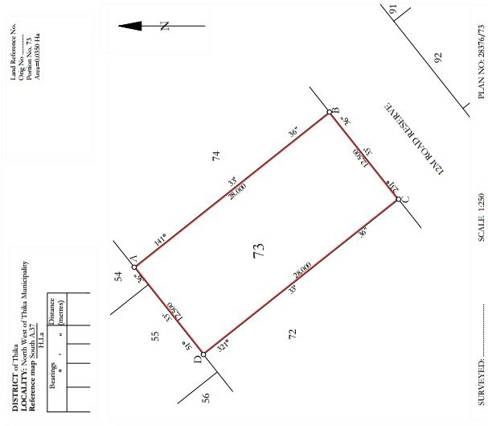
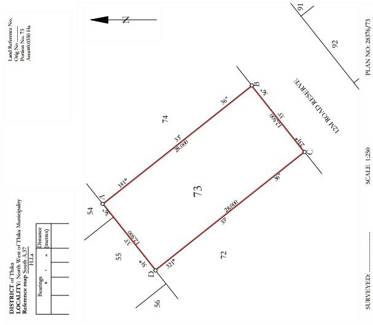
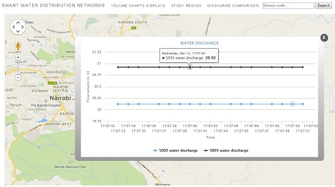

OpenMaps
Land, Engineering surveyors and Location Based Services Consultants
OpenMaps Limited
We have the necessary expertise which provide the best compromise between cost, speed and reliability in the delivery of our services.
About Us
OpenMaps is a full service firm ready to provide professional land surveying and online mapping services, while taking pride in providing our clients with superior and quality work. Our Management of projects from beginning to end is unique and extremely efficient at a reasonable price.
Contact Us
- openmaps14@gmail.com or joshua@openmaps.co.ke
- Whatsapp/Call: +254739186580



Land Surveying
Topography
- Survey to provide surface elevations on sites.
- Volumetric surveys to determine quantities of soil removal and/or soil pile volumes.
- Determination of surface percent slope for development.
Engineering Surveys
- Setting out: Design plan implementation of Controls and Benchmarks for development sites.
- Layout Primary, Secondary, Detail points and TBMs in the site to provide contractor references to guide construction activities.
Cadastral
- Beacon Re-establishment and Land Delineation.
- Establishment of Controls, Land Subdivision and Land Consolidation.
- Survey Plans & Deed Plans.
- Change of user.

GIS Modelling

Location Based Services
Real-Time Applications
- GIS-enabled Technologies Integration.
- Spatially-enabled database Management.
- Sensor-enabled GIS systems e.g temperature, noise, smoke e.t.c.
- Online maps integration with ground based Sensor e.g. RFIDs, radiation e.t.c.
Asset Tracking and Management
- Geolocation technologies.
- Vehicle Tracking Systems and Services.
- Spatially-enabled enterprise Database Management.
- Geocoding
Geospatial Information Systems & Data Analysis
- Utilities Mapping and Monitoring.
- GIS software add-ons development.
- Spatial Data Analysis.
Training on Geospatial Information Systems
- Desktop GIS systems
- Spatial Database systems
- GIS Toolboxes
GIS This Week
Georeferencing
Georeferenced data: Location on Earth surface is represented in a Coordinate Referenced System
❝ We keep it Simple through Geolocation ❞
GIS Programming
<!DOCTYPE html>
<html lang="en">
<head>
<meta charset="utf-8" />
<title>My OpenLayers Map</title>
<link type="text/css" rel="stylesheet" href="map.css" />
<script type="text/javascript" src="OpenLayers.js"></script>
<script type="text/javascript">
var map;
function init() {
//The code goes here
}
</script>
</head>
<body onload="init();">
<div id="map">
</div>
</body>
</html>
Web Mapping
Remote Sensing